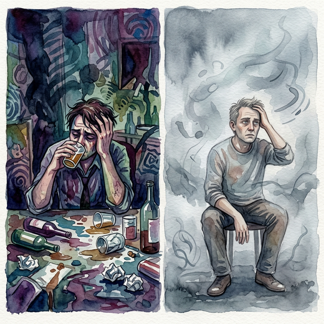

La Ceguera AutoimpuestaSelf-Imposed BlindnessCecità autoimposta自我失明العمى المفروض ذاتياДобровольная слепотаSelbst auferlegte BlindheitCécité auto-imposée自ら選んだ失明Cegueira autoimpostaMù quáng tự chuốc lấy
Huir del presente nubla los ojos y encadena el espíritu. Fleeing from the present clouds the eyes and chains the spirit. Chạy trốn khỏi hiện tại làm mờ đôi mắt và trói buộc tâm hồn. Vor der Gegenwart zu fliehen, trübt die Augen und fesselt den Geist. Бегство от настоящего затуманивает глаза и сковывает дух. Fuir le présent voile les yeux et enchaîne l'esprit. Fuggire dal presente annebbia gli occhi e incatena lo spirito. Fugir do presente turva os olhos e encadeia o espírito. 現在から逃げることは目を曇らせ、精神を縛ります。 逃离现在会蒙蔽双眼，束缚精神。 الهروب من الحاضر يغيم العيون ويقيد الروح.
Someter el prodigio sagrado de la lucidez mediante la sumisión a pócimas sedantes y adicciones oscuras es, tal vez, la claudicación existencial más triste. Entregarse a la embriaguez constante no es más que cegar los propios ojos espirituales...
Acostumbrar nuestra consciencia a huir hacia el letargo y la confusión entorpece irremisiblemente el cerebro. Esta indolencia no solo daña el momento presente, sino que mutila el potencial cognitivo completo del alma.
Por lo tanto, aquellos que deciden apagar voluntariamente su brillo intelectual en vida, arrastrarán en sus encarnaciones venideras una penumbra espesa, naciendo cautivos del letargo mental y de una incapacidad atroz para comprender el mundo que les rodea.
Submitting the sacred prodigy of lucidity through submission to sedative potions and dark addictions is, perhaps, the saddest existential surrender. Indulging in constant drunkenness is nothing more than blinding one's own spiritual eyes...
Accustoming our consciousness to flee into lethargy and confusion irrevocably dulls the brain. This indolence not only damages the present moment, but mutilates the soul's full cognitive potential.
Therefore, those who decide to voluntarily extinguish their intellectual brilliance in life will carry a thick gloom in their future incarnations, being born captives of mental lethargy and an atrocious inability to understand the world around them.
Sottomettere il sacro prodigio della lucidità attraverso la sottomissione a pozioni sedative e dipendenze oscure è, forse, la resa esistenziale più triste. Indulgere in una costante ubriachezza non è altro che accecare i propri occhi spirituali...
Abituare la nostra coscienza a fuggire nella letargia e nella confusione offusca irrevocabilmente il cervello. Questa indolenza non solo danneggia il momento presente, ma mutila tutto il potenziale cognitivo dell'anima.
Pertanto, coloro che decidono di estinguere volontariamente la propria brillantezza intellettuale nella vita porteranno con sé una fitta tristezza nelle loro future incarnazioni, nascendo prigionieri della letargia mentale e di un'atroce incapacità di comprendere il mondo che li circonda.
通过屈服于镇静药水和黑暗的成瘾来屈服于神圣的清醒神童，也许是最悲伤的存在主义投降。经常酗酒无非是蒙蔽了自己的灵眼……
如果我们的意识习惯于陷入昏睡和混乱，大脑就会变得迟钝，不可挽回。这种懒惰不仅损害了当下，而且损害了灵魂的全部认知潜力。
因此，那些决定在生命中自愿熄灭智力才华的人，在未来的转世中将带着浓浓的阴郁，生来就是精神昏睡的俘虏，并且无法理解周围的世界。
ربما يكون الاستسلام لمعجزة الوضوح المقدسة من خلال الخضوع للجرعات المهدئة والإدمان المظلم هو الاستسلام الوجودي الأكثر حزنًا. إن الانغماس في السكر المستمر ليس أكثر من عمى العيون الروحية...
إن تعويد وعينا على الفرار إلى الخمول والارتباك يؤدي إلى إضعاف الدماغ بشكل لا رجعة فيه. وهذا التراخي لا يضر باللحظة الحالية فحسب، بل يشوه الإمكانات المعرفية الكاملة للروح.
لذلك، فإن أولئك الذين يقررون إطفاء تألقهم الفكري في الحياة طوعًا، سيحملون كآبة كثيفة في تجسيداتهم المستقبلية، حيث يولدون أسرى الخمول العقلي وعدم القدرة الفظيعة على فهم العالم من حولهم.
Подчинение священному чуду осознанности через подчинение успокаивающим зельям и темным пристрастиям — это, пожалуй, самая печальная экзистенциальная капитуляция. Постоянное пьянство есть не что иное, как ослепление собственных духовных глаз...
Приучение нашего сознания убегать в летаргию и растерянность безвозвратно притупляет мозг. Эта праздность не только вредит настоящему моменту, но и калечит весь познавательный потенциал души.
Поэтому те, кто решит добровольно погасить свой интеллектуальный блеск в жизни, будут нести в своих будущих воплощениях густой мрак, рождаясь пленниками умственной вялости и зверской неспособности понимать окружающий мир.
Sich dem heiligen Wunder der Klarheit zu unterwerfen, indem man sich Beruhigungsmitteln und dunklen Süchten unterwirft, ist vielleicht die traurigste existentielle Hingabe. Ständiger Trunkenheit nachzugeben ist nichts anderes, als die eigenen spirituellen Augen zu blenden ...
Wenn wir unser Bewusstsein daran gewöhnen, in Lethargie und Verwirrung zu flüchten, wird das Gehirn unwiderruflich abgestumpft. Diese Trägheit schadet nicht nur dem gegenwärtigen Moment, sondern verstümmelt auch das volle kognitive Potenzial der Seele.
Deshalb werden diejenigen, die sich dazu entschließen, ihre intellektuelle Brillanz im Leben freiwillig auszulöschen, in ihren zukünftigen Inkarnationen eine tiefe Trübsinnigkeit mit sich tragen, da sie als Gefangene geistiger Lethargie und einer grausamen Unfähigkeit, die Welt um sich herum zu verstehen, geboren werden.
Soumettre le prodige sacré de la lucidité en se soumettant à des potions sédatives et à de sombres addictions est peut-être l’abandon existentiel le plus triste. Se livrer à une ivresse constante n'est rien d'autre que d'aveugler ses propres yeux spirituels...
Habituer notre conscience à fuir dans la léthargie et la confusion engourdit irrévocablement le cerveau. Cette indolence non seulement endommage le moment présent, mais mutile tout le potentiel cognitif de l'âme.
Par conséquent, ceux qui décident d’éteindre volontairement leur éclat intellectuel dans la vie porteront une épaisse tristesse dans leurs incarnations futures, naissant captifs d’une léthargie mentale et d’une atroce incapacité à comprendre le monde qui les entoure.
鎮静剤や暗い依存症への服従によって、神聖な神聖な明晰さへの服従は、おそらく最も悲しい実存の放棄である。絶え間なく酩酊することは、自分自身の霊的な目を盲目にすることに他なりません...
私たちの意識が無気力と混乱に逃げることに慣れてしまうと、脳は取り返しのつかないほど鈍くなります。この怠惰は現在の瞬間にダメージを与えるだけでなく、魂の完全な認知能力を損ないます。
したがって、人生において自分の知的輝きを自発的に消すことを決めた人は、将来の転生において深い憂鬱を抱え、精神的無気力と周囲の世界を理解することのできないほどの無能の虜として生まれることになります。
Submeter-se ao sagrado prodígio da lucidez através da submissão a poções sedativas e vícios obscuros é, talvez, a mais triste rendição existencial. Entregar-se à embriaguez constante nada mais é do que cegar os próprios olhos espirituais...
Acostumar nossa consciência a fugir para a letargia e a confusão entorpece irrevogavelmente o cérebro. Esta indolência não só prejudica o momento presente, mas mutila todo o potencial cognitivo da alma.
Portanto, aqueles que decidirem extinguir voluntariamente seu brilho intelectual na vida carregarão uma densa melancolia em suas encarnações futuras, nascendo cativos da letargia mental e de uma incapacidade atroz de compreender o mundo ao seu redor.
Khuất phục kỳ quan thiêng liêng của sự minh mẫn thông qua việc phục tùng các loại thuốc an thần và những cơn nghiện tăm tối có lẽ là sự đầu hàng hiện sinh đau đớn nhất. Đắm chìm trong sự say xỉn triền miên không gì khác hơn là tự làm mù đi đôi mắt tâm linh của chính mình...
Tập cho ý thức của chúng ta chạy trốn vào sự trì trệ và hỗn loạn sẽ làm tê liệt bộ não một cách vô phương cứu chữa. Sự lười biếng này không chỉ gây hại cho hiện tại mà còn hủy hoại toàn bộ tiềm năng nhận thức của linh hồn.
Vì vậy, những ai quyết định tự nguyện dập tắt ánh sáng trí tuệ của mình khi còn sống sẽ phải mang theo một bóng tối dày đặc trong các kiếp sau, sinh ra là tù nhân của sự trì trệ tinh thần và mất khả năng nhận thức thế giới xung quanh.
La Llama Apagada
The Flame Extinguished
La Fiamma Spenta
火焰熄灭了
انطفأت الشعلة
Пламя погасло
Die Flamme erloschen
La flamme éteinte
炎は消えた
A Chama Extinta
Ngọn Lửa Đã Tắt
Incapaz de lidiar con las heridas del mundo, un hombre decidió recluirse en las sombras de una taberna ahumada, ahogando su vitalidad en licores ardientes... Y así, noche tras noche, prefirió la oscuridad de la bruma a la gloria de estar vivo y despierto.
Pero los sentidos tienen memoria. Al rehusarse a ejercitar el milagro de la razón, la inteligencia lo fue abandonando como un río que se escurre entre los dedos.
Al despertar a un nuevo ciclo, se descubrió perdido en una profunda neblina que nunca se disipaba. Y entendió, con amarga quietud, que quien rechaza el dolor embriagando el cerebro, también renuncia eternamente al placer de la luz.
Unable to deal with the wounds of the world, a man decided to seclude himself in the shadows of a smoky tavern, drowning his vitality in burning liquors... And so, night after night, he preferred the darkness of the mist to the glory of being alive and awake.
But the senses have memory. By refusing to exercise the miracle of reason, intelligence abandoned him like a river that slips through the fingers.
Waking up to a new cycle, he found himself lost in a deep fog that never dissipated. And he understood, with bitter stillness, that whoever rejects pain by intoxicating the brain, also eternally renounces the pleasure of light.
Incapace di affrontare le ferite del mondo, un uomo decise di rinchiudersi nell'ombra di una taverna fumosa, affogando la sua vitalità in liquori ardenti... E così, notte dopo notte, preferì l'oscurità della nebbia alla gloria di essere vivo e sveglio.
Ma i sensi hanno memoria. Rifiutando di esercitare il miracolo della ragione, l'intelligenza lo ha abbandonato come un fiume che scivola tra le dita.
Al risveglio in un nuovo ciclo, si ritrovò perso in una nebbia profonda che non si dissipò mai. E capì, con amara quiete, che chi rifiuta il dolore inebriando il cervello, rinuncia eternamente anche al piacere della luce.
一个人无法应对世间的伤痛，他决定将自己隐居在烟雾缭绕的酒馆阴影中，用燃烧的烈酒淹没自己的生命力……于是，一夜又一夜，他宁愿选择迷雾的黑暗，也不愿活着和清醒的荣耀。
但感官有记忆。由于拒绝运用理性的奇迹，智力就像一条从指间溜走的河流一样抛弃了他。
当他醒来进入新的周期时，他发现自己迷失在从未消散的浓雾中。他痛苦地平静地明白，谁通过麻醉大脑来拒绝痛苦，谁就永远放弃了光明的乐趣。
قرر رجل، غير قادر على التعامل مع جراح العالم، أن ينعزل في ظلال حانة مليئة بالدخان، ويغرق حيويته في المشروبات الكحولية المشتعلة... وهكذا، ليلة بعد ليلة، فضل ظلام الضباب على مجد الحياة واليقظة.
لكن الحواس لها ذاكرة. وبرفضه ممارسة معجزة العقل، تخلى عنه الذكاء كالنهر الذي ينساب من بين الأصابع.
عندما استيقظ على دورة جديدة، وجد نفسه ضائعًا في ضباب عميق لم يتبدد أبدًا. وفهم بسكون مرير أن من يرفض الألم بتسميم الدماغ، يتخلى أيضًا إلى الأبد عن لذة النور.
Не в силах справиться с ранами мира, человек решил уединиться в тени дымного трактира, утопив свою жизненную силу в обжигающих ликерах... И так ночь за ночью он предпочитал тьму тумана славе быть живым и бодрствующим.
Но чувства имеют память. Отказавшись воспользоваться чудом разума, разум покинул его, как река, ускользающая сквозь пальцы.
Проснувшись в новом цикле, он обнаружил, что потерялся в глубоком тумане, который так и не рассеялся. И он с горьким молчанием понял, что тот, кто отвергает боль опьянением мозга, тот навсегда отказывается и от удовольствия света.
Unfähig, mit den Wunden der Welt klarzukommen, beschloss ein Mann, sich in den Schatten einer verrauchten Taverne zurückzuziehen und seine Lebenskraft in brennenden Spirituosen zu ertränken ... Und so zog er Nacht für Nacht die Dunkelheit des Nebels dem Ruhm des Lebens und Wachseins vor.
Aber die Sinne haben ein Gedächtnis. Indem er sich weigerte, das Wunder der Vernunft auszuüben, verließ ihn die Intelligenz wie ein Fluss, der durch die Finger gleitet.
Als er in einem neuen Zyklus erwachte, befand er sich in einem tiefen Nebel, der sich nie auflöste. Und er verstand mit bitterer Stille, dass jeder, der den Schmerz durch die Berauschung des Gehirns zurückweist, auch auf ewig auf die Freude am Licht verzichtet.
Incapable de soigner les blessures du monde, un homme décida de s'enfermer dans l'ombre d'une taverne enfumée, noyant sa vitalité dans des liqueurs brûlantes... Et ainsi, nuit après nuit, il préféra l'obscurité de la brume à la gloire d'être vivant et éveillé.
Mais les sens ont de la mémoire. En refusant d'exercer le miracle de la raison, l'intelligence l'a abandonné comme une rivière qui coule entre les doigts.
Se réveillant dans un nouveau cycle, il se retrouva perdu dans un profond brouillard qui ne se dissipa jamais. Et il comprit, avec un calme amer, que celui qui rejette la douleur en enivrant le cerveau renonce aussi éternellement au plaisir de la lumière.
世界の傷に対処することができず、男は煙の立ち込める居酒屋の影に引きこもり、燃える酒に生命力を注ぐことにした...そして夜ごと、彼は生きて目覚めている栄光よりも霧の暗闇を好んだ。
しかし、感覚には記憶があります。理性の奇跡を行使することを拒否したことで、知性は指の間を流れる川のように彼を放棄した。
新しいサイクルに目覚めたとき、彼は自分が決して消えることのない深い霧の中に迷い込んでいることに気づきました。そして彼は、脳を酩酊させて痛みを拒否する者は、光の快楽も永遠に放棄することになるということを、苦々しい静寂とともに理解した。
Incapaz de lidar com as feridas do mundo, um homem decidiu isolar-se nas sombras de uma taberna enfumaçada, afogando a sua vitalidade em bebidas ardentes... E assim, noite após noite, ele preferiu a escuridão da névoa à glória de estar vivo e acordado.
Mas os sentidos têm memória. Ao recusar exercer o milagre da razão, a inteligência o abandonou como um rio que escorre pelos dedos.
Ao acordar para um novo ciclo, ele se viu perdido em uma névoa profunda que nunca se dissipou. E compreendeu, com amarga quietude, que quem rejeita a dor intoxicando o cérebro, também renuncia eternamente ao prazer da luz.
Không thể đối mặt với những vết thương của thế gian, một người đàn ông quyết định ẩn mình trong bóng tối của một quán rượu đầy khói, dìm chết sức sống của mình trong những ly rượu nồng... Và cứ thế, đêm này qua đêm khác, ông thích bóng tối của màn sương hơn là vinh quang được sống và tỉnh táo.
Nhưng các giác quan có ký ức. Bằng cách từ chối rèn luyện phép màu của lý trí, trí tuệ dần rời bỏ ông như một dòng sông trôi tuột qua kẽ tay.
Khi thức dậy ở một chu kỳ mới, ông thấy mình lạc lối trong một màn sương mù dày đặc không bao giờ tan biến. Và ông hiểu, với sự tĩnh lặng cay đắng, rằng kẻ nào chối bỏ nỗi đau bằng cách làm say bộ não, kẻ đó cũng vĩnh viễn từ bỏ niềm vui của ánh sáng.

La Inspiración Original
The Original Inspiration
L'Ispirazione Originale
最初的灵感
الإلهام الأصلي
Оригинальное вдохновение
Die Ursprüngliche Inspiration
L'Inspiration Originale
元のインスピレーション
A Inspiração Original
Nguồn Cảm Hứng Nguyên Bản
La historia que hemos relatado en este capítulo está inspirada por el pasaje de la escena original de los murales «Tranh Nhân Quả» (Ilustraciones del Karma) del Templo Linh Ung en Da Nang, capturado en la imagen.
La storia che abbiamo raccontato in questo capitolo è ispirata al passaggio della scena originale dei murali “Tranh Nhân Quả” (Illustrazioni del Karma) del Tempio Linh Ung a Da Nang, catturati nell'immagine.
我们在本章中讲述的故事的灵感来自图像中捕获的岘港灵应寺“Tranh Nhân Quả”（业力插图）壁画的原始场景。
القصة التي رويناها في هذا الفصل مستوحاة من مقطع من المشهد الأصلي لجداريات "ترانه نهان كو" (الرسوم التوضيحية للكارما) لمعبد لينه أونغ في دا نانغ، الملتقطة في الصورة.
История, которую мы рассказали в этой главе, вдохновлена отрывком из оригинальной сцены фрески «Тран Нхан Ку» («Иллюстрации кармы») храма Линь Унг в Дананге, запечатленной на изображении.
Die Geschichte, die wir in diesem Kapitel erzählt haben, ist inspiriert von der Passage aus der Originalszene der Wandgemälde „Tranh Nhân Quả“ (Illustrationen von Karma) des Linh Ung-Tempels in Da Nang, die im Bild festgehalten ist.
L'histoire que nous avons racontée dans ce chapitre est inspirée du passage de la scène originale des peintures murales « Tranh Nhân Quả » (Illustrations du Karma) du temple Linh Ung à Da Nang, capturées dans l'image.
この章で私たちが語った物語は、ダナンのリンウン寺院の壁画「Tranh Nhân Quả」（カルマの図）の元のシーンの一節からインスピレーションを得て、画像に収められています。
A história que contamos neste capítulo é inspirada na passagem da cena original dos murais “Tranh Nhân Quả” (Ilustrações do Karma) do Templo Linh Ung em Da Nang, capturada na imagem.
Câu chuyện mà chúng tôi đã kể trong chương này được lấy cảm hứng từ đoạn trích từ bối cảnh nguyên bản của bức bích họa «Tranh Nhân Quả» (Minh họa về Nghiệp) tại Chùa Linh Ứng ở Đà Nẵng, được ghi lại trong hình ảnh.
The story we have related in this chapter is inspired by the passage from the original scene of the "Tranh Nhân Quả" (Karma Illustrations) murals at the Linh Ung Temple in Da Nang, captured in the image.
Como se puede apreciar en el pasaje extraído del mural, la causa y su efecto kármico están descritos originalmente en vietnamita y con una breve traducción al inglés. A continuación, te ofrecemos su traducción detallada en los distintos idiomas:
As can be seen in the passage extracted from the mural, the cause and its karmic effect are originally described in Vietnamese with a brief English translation. Below, we offer the detailed translation in different languages:
Come si può vedere nel passaggio estratto dal murale, la causa e il suo effetto karmico sono originariamente descritti in vietnamita con una breve traduzione in inglese. Di seguito offriamo la traduzione dettagliata in diverse lingue:
As can be seen in the passage taken from the mural, the cause and its karmic effect are originally described in Vietnamese and with a brief translation into English.下面，我们为您提供不同语言的详细翻译：
وكما يتبين من المقطع المأخوذ من اللوحة الجدارية، فإن السبب وتأثيره الكارمي موصوفان في الأصل باللغة الفيتنامية مع ترجمة مختصرة إلى الإنجليزية. ونقدم لكم أدناه ترجمتها التفصيلية باللغات المختلفة:
Как видно из отрывка, взятого из фрески, причина и ее кармическое следствие изначально описаны на вьетнамском языке и с кратким переводом на английский язык. Ниже мы предлагаем вам его подробный перевод на разные языки:
Wie aus der Passage aus dem Wandgemälde hervorgeht, werden die Ursache und ihre karmische Wirkung ursprünglich auf Vietnamesisch und mit einer kurzen Übersetzung ins Englische beschrieben. Nachfolgend bieten wir Ihnen die ausführliche Übersetzung in die verschiedenen Sprachen an:
Comme on peut le voir dans le passage tiré de la peinture murale, la cause et son effet karmique sont initialement décrits en vietnamien et avec une brève traduction en anglais. Ci-dessous, nous vous proposons sa traduction détaillée dans les différentes langues :
壁画の一節からわかるように、原因とそのカルマ的影響はもともとベトナム語で説明されており、英語への簡単な翻訳が付けられています。以下に、さまざまな言語での詳細な翻訳を提供します。
Como pode ser visto no trecho retirado do mural, a causa e seu efeito cármico são originalmente descritos em vietnamita e com uma breve tradução para o inglês. Abaixo, oferecemos sua tradução detalhada nos diferentes idiomas:
Như có thể thấy trong đoạn trích từ bức bích họa, nguyên nhân và quả báo của nó ban đầu được mô tả bằng tiếng Việt và có bản dịch tiếng Anh ngắn gọn. Dưới đây, chúng tôi cung cấp bản dịch chi tiết sang các ngôn ngữ khác nhau:
🇻🇳 Tiếng Việt:
Nhân: Ai thường say sưa nghiện ngập.
Quả: Sau này ngu
dốt mê mờ.
🇬🇧 English Translation:
Cause:
Being an alcoholic and drug user.
Effect: Brings a dumb and foolish man.
Traducción Recreada:
Causa: Ser adicto al alcohol o a las drogas.
Efecto:
Conlleva un renacer como alguien sumido en la estupidez y el letargo.
Recreated Translation:
Cause: Being addicted to alcohol or drugs.
Effect:
It entails a rebirth as someone immersed in stupidity and lethargy.
Traduzione ricreata:
Causa: dipendenza da alcol o droghe.
Effetto:
comporta una rinascita come qualcuno immerso nella stupidità e nella letargia.
重新翻译：
原因：酗酒或吸毒成瘾。
结果：它需要重生为陷入愚蠢和昏昏欲睡的人。
الترجمة المُعاد إنشاؤها:
السبب: الإدمان على الكحول أو المخدرات.
التأثير:
يستلزم إعادة الميلاد كشخص غارق في الغباء والخمول.
Воссозданный перевод:
Причина: пристрастие к алкоголю или
наркотикам.
Следствие: влечет за собой перерождение в образе человека, погруженного в
глупость и апатию.
Nachgebildete Übersetzung:
Ursache: Alkohol- oder
Drogenabhängigkeit.
Wirkung: Es bedeutet eine Wiedergeburt als jemand, der in Dummheit und
Lethargie versunken ist.
Traduction recréée :
Cause : Être accro à l'alcool ou aux
drogues.
Effet : Cela implique une renaissance en tant que personne plongée dans la stupidité
et la léthargie.
再作成された翻訳:
原因: アルコールまたは薬物中毒。
結果: 愚かさと無気力に浸った人として生まれ変わることを伴います。
Tradução recriada:
Causa: Ser viciado em álcool ou drogas.
Efeito:
Implica um renascimento como alguém imerso em estupidez e letargia.
Bản dịch tái hiện:
Nguyên nhân: Nghiện rượu hoặc ma túy.
Kết quả: Dẫn đến
việc tái sinh thành một người chìm đắm trong sự ngu ngốc và trì trệ.
Análisis: Rendir voluntariamente el precioso milagro de la lucidez y el discernimiento ante los sedantes letárgicos y adicciones oscuras es uno de los extravíos espirituales más fatales. Sumergir la propia mente repetidamente en brumas embriagadoras genera una huella donde, inexorablemente, la consciencia se atrofia hasta renacer con la severa reducción intelectual y confusión abrumadora que en vida anterior se eligió como escape pasivo y tóxico.
Analysis: Voluntarily surrendering the precious miracle of lucidity and discernment in the face of lethargic sedatives and dark addictions is one of the most fatal spiritual errors. Immersing one's mind repeatedly in intoxicating mists generates a footprint where, inexorably, consciousness atrophies until it is reborn with the severe intellectual reduction and overwhelming confusion that in a previous life was chosen as a passive and toxic escape.
Analisi: rinunciare volontariamente al prezioso miracolo della lucidità e del discernimento di fronte ai sedativi letargici e alle dipendenze oscure è uno degli errori spirituali più fatali. Immergere ripetutamente la mente in nebbie inebrianti genera un'impronta dove, inesorabilmente, la coscienza si atrofizza fino a rinascere con la grave riduzione intellettuale e la travolgente confusione che in una vita precedente era stata scelta come fuga passiva e tossica.
分析：面对昏昏欲睡的镇静剂和黑暗的成瘾，自愿放弃清醒和洞察力的宝贵奇迹是最致命的精神错误之一。反复将一个人的思想沉浸在令人陶醉的迷雾中会产生一个脚印，在那里，意识无情地萎缩，直到它重生，伴随着严重的智力下降和压倒性的混乱，在前世被选择作为一种被动和有毒的逃避。
التحليل: إن التنازل طوعًا عن معجزة الوضوح والتمييز الثمينة في مواجهة المهدئات الخاملة والإدمان المظلم هو أحد الأخطاء الروحية القاتلة. إن غمر عقل المرء مرارًا وتكرارًا في الضباب المسكر يولد بصمة حيث يضمر الوعي بلا هوادة حتى يولد من جديد مع الاختزال الفكري الشديد والارتباك الساحق الذي تم اختياره في حياة سابقة كهروب سلبي وسام.
Анализ Добровольно отказаться от драгоценного чуда ясности и проницательности перед лицом летаргических успокоительных и темных пристрастий – одна из самых фатальных духовных ошибок. Постоянное погружение ума в опьяняющий туман оставляет след, в котором сознание неумолимо атрофируется, пока не возродится заново с серьёзным интеллектуальным снижением и подавляющим замешательством, которое в предыдущей жизни было выбрано как пассивное и токсичное бегство.
Analyse: Der freiwillige Verzicht auf das kostbare Wunder der Klarheit und des Urteilsvermögens angesichts lethargischer Beruhigungsmittel und dunkler Süchte ist einer der fatalsten spirituellen Fehler. Das wiederholte Eintauchen des Geistes in berauschende Nebel erzeugt einen Fußabdruck, auf dem das Bewusstsein unaufhaltsam verkümmert, bis es mit der starken intellektuellen Reduzierung und überwältigenden Verwirrung wiedergeboren wird, die in einem früheren Leben als passive und giftige Flucht gewählt wurde.
Analyse : Abandonner volontairement le précieux miracle de la lucidité et du discernement face aux sédatifs léthargiques et aux sombres addictions est l'une des erreurs spirituelles les plus fatales. Plonger son esprit à plusieurs reprises dans des brumes enivrantes génère une empreinte où, inexorablement, la conscience s'atrophie jusqu'à ce qu'elle renaît avec la sévère réduction intellectuelle et la confusion écrasante qui, dans une vie antérieure, ont été choisies comme une évasion passive et toxique.
分析: 無気力な鎮静剤や暗い依存症に直面して、明晰さと識別力という貴重な奇跡を自発的に放棄することは、最も致命的な霊的間違いの 1 つです。心を酩酊させる霧に繰り返し浸すと足跡が生成され、意識は容赦なく萎縮し、前世で受動的で有毒な逃避として選ばれた重度の知的低下と圧倒的な混乱を伴って生まれ変わるまでである。
Análise: Renunciar voluntariamente ao precioso milagre da lucidez e do discernimento diante dos sedativos letárgicos e dos vícios obscuros é um dos erros espirituais mais fatais. Mergulhar repetidamente a mente em névoas inebriantes gera uma pegada onde, inexoravelmente, a consciência se atrofia até renascer com a severa redução intelectual e a confusão avassaladora que numa vida anterior foi escolhida como fuga passiva e tóxica.
Phân tích: Tự nguyện dâng nộp phép màu quý giá của sự minh mẫn và khả năng phân biệt trước những loại thuốc an thần trì trệ và những cơn nghiện tăm tối là một trong những sai lầm tâm linh chí tử nhất. Việc dìm tâm trí mình lặp đi lặp lại trong những màn sương mù say xỉn sẽ tạo ra một dấu ấn mà ở đó, ý thức sẽ teo tóp lại một cách không thể tránh khỏi cho đến khi tái sinh với sự suy giảm trí tuệ nghiêm trọng và sự hỗn loạn bao trùm mà trong kiếp trước đã được chọn như một lối thoát thụ động và độc hại.
Si quieres conocer más sobre el proyecto o colaborar, accede a nuestro Linktree.
If you want to know more about the project or collaborate, access our Linktree.
Se vuoi saperne di più sul progetto o collaborare, accedi al nostro Linktree.
如果您想了解有关该项目或合作的更多信息，请访问我们的 Linktree.
إذا كنت تريد معرفة المزيد عن المشروع أو التعاون، قم بالوصول إلى موقعنا Linktree.
Если вы хотите узнать больше о проекте или сотрудничать, посетите наш Linktree.
Wenn Sie mehr über das Projekt erfahren oder zusammenarbeiten möchten, greifen Sie auf unsere zu Linktree.
Si vous souhaitez en savoir plus sur le projet ou collaborer, accédez à notre Linktree.
プロジェクトについて詳しく知りたい場合、またはコラボレーションしたい場合は、こちらにアクセスしてください。 Linktree.
Se quiser saber mais sobre o projeto ou colaborar, acesse nosso Linktree.
Nếu bạn muốn biết thêm về dự án hoặc hợp tác, hãy truy cập Linktree của chúng tôi.